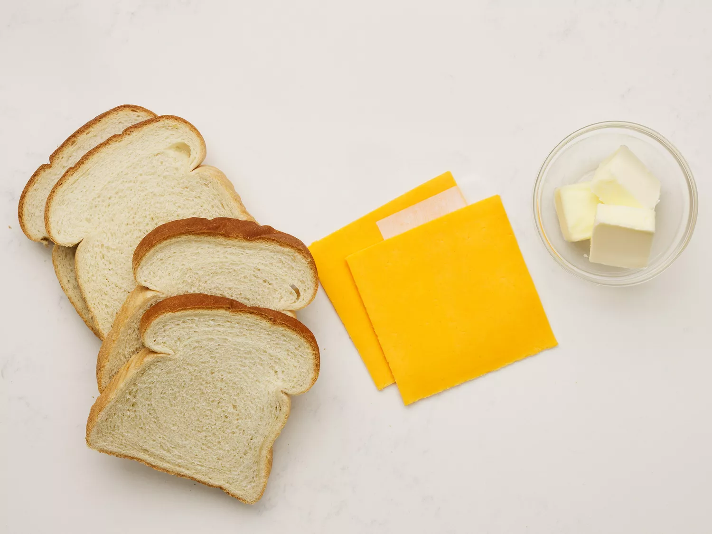
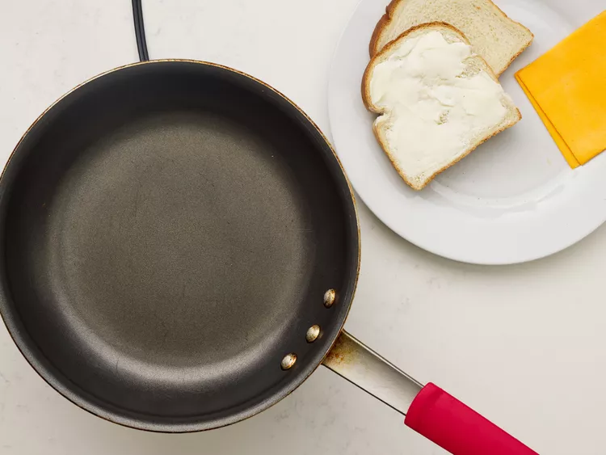
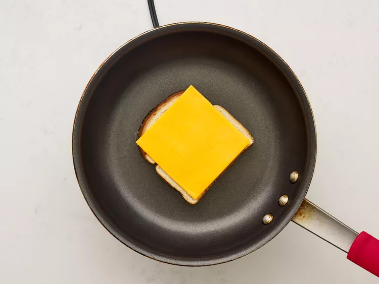
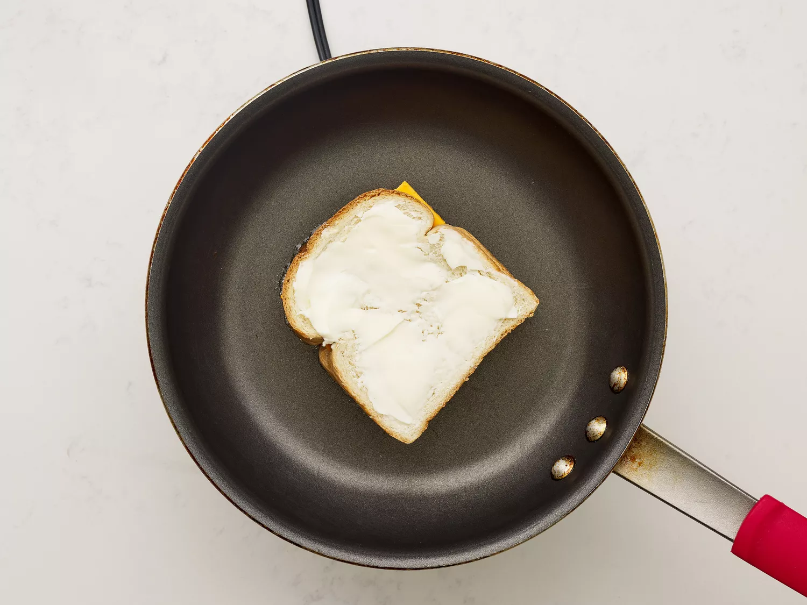
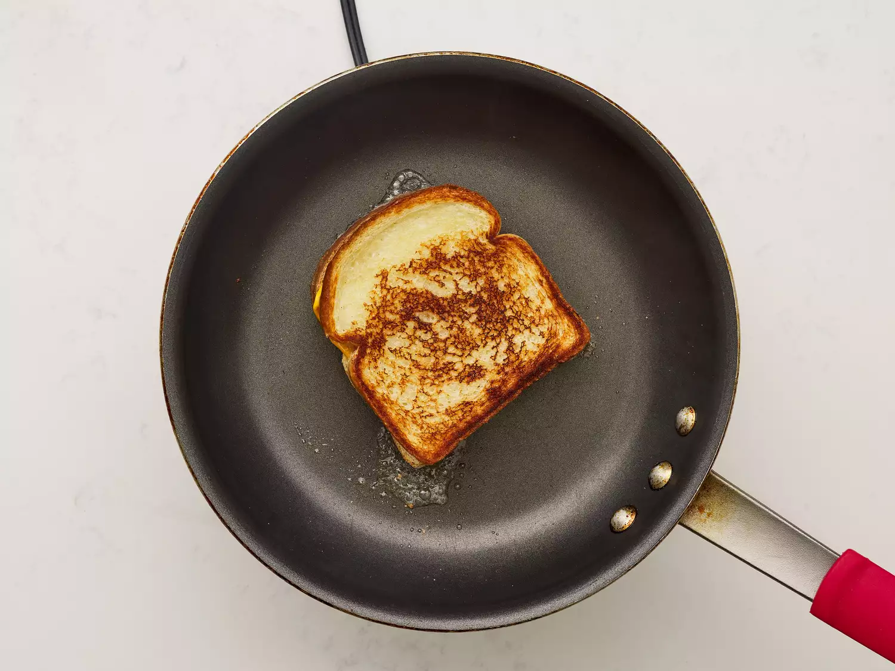

You'll find a detailed ingredient list and step-by-step instructions in the recipe below, but let's go over the basics:
This classic grilled cheese sandwich recipe calls for just white bread, sliced cheese, and butter. It's easy to switch up the bread and cheese to suit your taste preferences.
Here's a very brief overview of what you can expect when you make homemade grilled cheese.
Gather all ingredients.
Preheat a nonstick skillet over medium heat. Generously butter one side of a slice of bread.
Place bread butter-side down in the hot skillet; add 1 slice of cheese.
Butter a second slice of bread on one side and place butter-side up on top of cheese.
Cook until lightly browned on one side; flip over and continue cooking until cheese is melted.
Repeat with remaining 2 slices of bread, butter, and slice of cheese. Serve and enjoy!